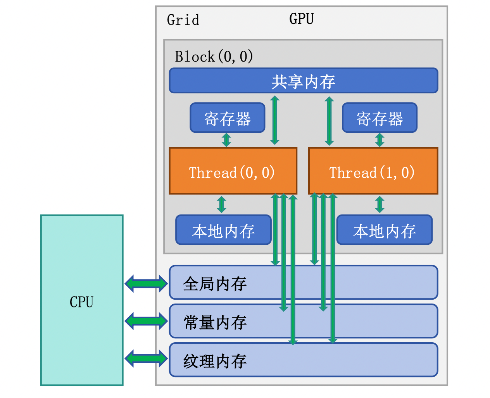
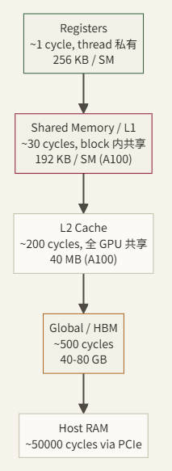
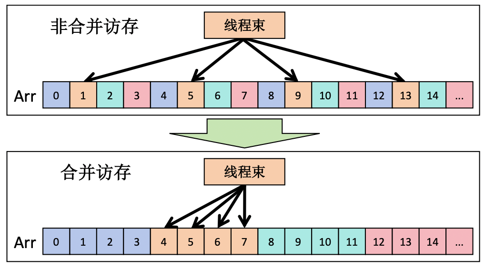
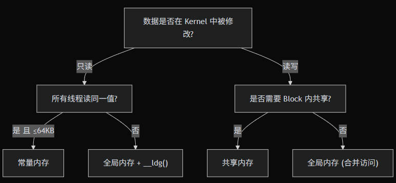

CUDA（二）：内存模型
一、概述
GPU 的计算能力极强——一块 A100 的峰值算力为 312 TFLOPS（FP16，Tensor Core 含稀疏加速），但它的显存带宽只有约 2 TB/s。做一道简单的算术：一次浮点乘加（FMA）需要读 2 个 float（8 Bytes）产生 2 个 FLOP，那么 2 TB/s 带宽最多喂饱 500 GFLOPS 的计算——不到峰值算力的 0.2%。
这意味着：绝大多数 Kernel 的性能瓶颈不是计算，而是内存访问。理解 CUDA 的多层内存层次，学会把数据放在”离计算最近的地方”。

| 内存类型 | 位置 | 容量 | 延迟 | 带宽 | 作用域 | 生命周期 |
|---|---|---|---|---|---|---|
| 寄存器 | SM 芯片上 | ~256KB/SM | 1 cycle | 最高 | 单线程 | 线程生命周期 |
| 共享内存 | SM 芯片上 | 48~228KB/SM（因架构而异） | ~20 cycles | ~19 TB/s | Block 内 | Block 生命周期 |
| L1 Cache | SM 芯片上 | 128~256KB/SM | ~30 cycles | ~19 TB/s | 自动 | 自动管理 |
| L2 Cache | GPU 芯片上 | 6~50MB | ~200 cycles | ~5 TB/s | 所有 SM | 自动管理 |
| 全局内存 (HBM) | 芯片外 | 16~80GB | ~400 cycles | 1~3.4 TB/s | 全局 | 应用生命周期 |
| 常量内存 | 芯片外+缓存 | 64KB | 1~400 cycles | 有缓存时极高 | 全局只读 | 应用生命周期 |

二、全局内存
全局内存（Global Memory）是 GPU 的”主存”，对应物理上的 HBM（高带宽内存）。它容量最大但延迟最高，是 CPU-GPU 数据交换的枢纽。
1 | |
全局内存的访问效率取决于一个 Warp 内 32 个线程的访问模式是否连续对齐。GPU 以 32B/64B/128B 的粒度从全局内存取数据（一次”事务”），如果 Warp 内线程访问的地址连续，一次事务就能满足所有线程——这就是合并访问。
1 | |

在设计数据结构时，优先选择 Structure of Arrays (SoA) 而非 Array of Structures (AoS)，因为 SoA 更容易实现合并访问。
2
3
4
5
6
7
8
9
10
11
12
13
14
15// ❌ AoS（Array of Structures）— 相邻线程访问不连续
struct Particle {
float x, y, z;
float vx, vy, vz;
};
Particle particles[N];
// Thread i 访问 particles[i].x → 间隔 sizeof(Particle) = 24 bytes
// ✅ SoA（Structure of Arrays）— 相邻线程访问连续
struct Particles {
float x[N], y[N], z[N];
float vx[N], vy[N], vz[N];
};
Particles p;
// Thread i 访问 p.x[i] → 间隔 sizeof(float) = 4 bytes，完美合并
三、共享内存
共享内存（Shared Memory）位于 SM 芯片上，48~228KB/SM（因架构而异），是 Block 内所有线程共享的高速暂存。把它想象成一个团队的白板——团队成员都可以快速读写，但其他团队看不到。
静态声明：
1 | |
动态声明：
1 | |
共享内存被划分为 32 个 Bank（对应 32 个 Warp 线程），每个 Bank 宽度为 4 bytes。当一个 Warp 中多个线程同时访问同一个 Bank 的不同地址时，访问必须串行化——这就是 Bank Conflict。
1 | |
对于矩阵转置等场景，经典方法是添加 padding：
1 | |
现代 GPU（sm_80+）的 L1 Cache 和共享内存共享同一块物理 SRAM，可以通过 API 配置比例：
1 | |
为什么可以通过 padding 消除 bank conflict？
共享内存被划分成 32 个 bank（和 warp 大小一致），每个 bank 宽 4 字节。
- 地址到 bank 的映射：
bank = (地址 / 4) % 32，也就是按 4 字节为单位，第i个字（word）落在第i % 32个 bank。 - 一个 warp 的 32 个线程同时访问共享内存时：
- 如果每个线程访问的地址落在不同 bank → 1 次事务完成（无冲突）
- 如果多个线程访问同一个 bank 的不同地址 → 这些访问必须串行化（bank conflict），性能成倍下降
- 如果多个线程访问同一个 bank 的同一地址 → 广播（broadcast），不算冲突
- 不用 padding 时
tile[32][32]的问题
考虑 float tile[32][32]，行优先存储，tile[row][col] 的线性索引是：
1 | |
也就是 bank 只取决于 col，与 row 无关。现在假设 warp 的 32 个线程要按列访问，即：
1 | |
- 线程
ty=0访问tile[0][k]→ bank =k - 线程
ty=1访问tile[1][k]→ bank =k - 线程
ty=2访问tile[2][k]→ bank =k - ……
所有 32 个线程都落在同一个 bank k，但地址不同 → 32 路 bank conflict，访问被串行化 32 次，性能暴跌。
这正是 tiled matmul 里
As[ty][k]（ty 变化、k 固定）这种按列读取时的典型场景。
- 加上 padding 后
tile[32][33]
把列数从 32 改成 33（多一个 padding 元素），存储布局变了：
1 | |
现在 bank 取决于 (row + col) % 32，row 会参与影响 bank。再看刚才的按列访问 tile[ty][k]，ty = 0…31，k 固定：
- 线程
ty=0：bank =(0 + k) % 32 - 线程
ty=1：bank =(1 + k) % 32 - 线程
ty=2：bank =(2 + k) % 32 - ……
- 线程
ty=31：bank =(31 + k) % 32
32 个线程正好落在 32 个不同的 bank 上，一一对应，无冲突，一个事务完成。
四、常量内存
常量内存（Constant Memory）是一块 64KB 的只读全局内存区域，配有专用的常量缓存。当 Warp 内所有线程读取同一地址时，一次缓存读取就能广播给 32 个线程。
1 | |
| 适合常量内存 | 不适合常量内存 |
|---|---|
| 所有线程读相同值（卷积核、系数表） | 每个线程读不同地址 |
| 数据量 ≤ 64KB | 数据量超过 64KB |
| 数据在 Kernel 执行期间不变 | 数据需要被 GPU 修改 |
关键点：如果 Warp 内不同线程访问常量内存的不同地址，访问会被串行化为 32 次读取，性能反而比全局内存更差。
五、纹理内存
纹理内存（Texture Memory）通过专用的纹理缓存访问全局内存，它针对二维空间局部性做了优化。在深度学习时代，纹理内存使用较少，但在图像处理和某些插值场景中仍有价值。
在 CUDA 12+ 中，L1/L2 缓存的优化已经覆盖了大部分纹理内存的使用场景。对于新代码，建议：
- 规则访问模式 → 直接使用全局内存 + L1 缓存
- 只读数据 → 使用
__ldg()内置函数走只读缓存路径 - 需要硬件插值 → 仍然使用纹理
1 | |
六、统一内存
统一内存（Unified Memory）是 CUDA 6.0 引入的编程抽象——它提供一个单一地址空间，CPU 和 GPU 都可以通过相同的指针访问数据，系统自动在两者之间迁移页面。
1 | |
统一内存的背后是操作系统级别的按需页面迁移：
- CPU 首次写入时，页面驻留在系统内存
- GPU Kernel 访问时触发缺页中断，驱动将页面迁移到显存
- Kernel 执行完后 CPU 再次访问，页面迁回系统内存
自动按需迁移有延迟开销，可以通过预取（Prefetch）提前触发迁移：
1 | |
| 适合统一内存 | 不适合统一内存 |
|---|---|
| 原型开发和快速迭代 | 极致性能要求的生产代码 |
| CPU/GPU 交替访问的复杂数据结构 | 大块数据的单向传输 |
| 链表、树等指针结构 | 简单的输入→计算→输出模式 |
| 不确定 GPU 会访问哪些数据 | 明确知道数据使用模式 |
注意：统一内存简化了编程但可能牺牲性能。对于性能敏感的代码，显式使用
cudaMemcpy通常比统一内存快，因为你可以精确控制数据传输时机并与计算重叠。
七、寄存器与局部内存
寄存器是每个线程私有的最快存储。Kernel 中的局部变量默认存放在寄存器中：
1 | |
每个 SM 的寄存器总量有限（如 A100 为 65536 个 32-bit 寄存器/SM）。当一个线程使用的寄存器超过 SM 能分配给它的数量时，多出的变量会”溢出”到局部内存（实际是全局内存的一块区域，有 L1/L2 缓存加速但延迟仍然高）。
1 | |
| 推荐做法 | 不推荐做法 |
|---|---|
| 复用临时变量 | 声明大量独立变量 |
循环展开适度（#pragma unroll） |
展开因子过大导致寄存器爆炸 |
用 --ptxas-options=-v 监控 |
盲目追求零溢出 |
注意：寄存器使用是一个权衡——用更多寄存器可以减少计算中的内存访问，但也会降低 SM 上能同时驻留的 Warp 数量（降低占用率）。需要根据具体 Kernel 找平衡点。
八、总结

| 需求 | 首选方案 | 次选方案 |
|---|---|---|
| Block 内线程间数据交换 | 共享内存 + __syncthreads() |
Warp Shuffle（同 Warp 内） |
| 全局只读广播 | 常量内存 | __ldg() |
| 大数组逐元素处理 | 全局内存（合并访问） | — |
| 局部累加器/计数器 | 寄存器 | — |
| 复杂数据结构快速原型 | 统一内存 | — |
| 减少全局内存事务 | Tiling + 共享内存 | L1 缓存 |